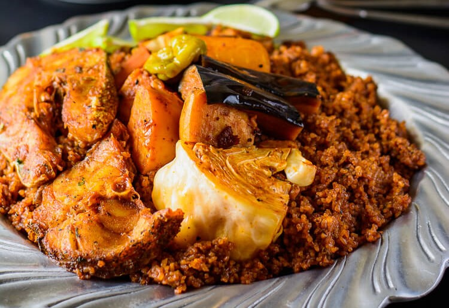

Thieboudienne

Description
Thieboudienne is the national dish of Senegal, an aromatic combination of
fish, vegetables, and rice in a hearty tomato sauce flavored with garlic
and chili. Fish, vegetables, and rice are usually served separately, with
a few lime wedges on the side, used for squeezing the juice over fish.
It is believed that the dish was invented in the city of St. Louis in the
19th century.
Ingredients
Ingredients for the Fish and Stuffing
- A handful of parsley about a heaping cup
- cloves of garlic
- scotch bonnet/ habanero pepper
- tsp shrimp bouillon
- tsp black pepper
- tsp salt
-
lbs blue snapper fish preferably cut into fish steaks or any white fish
of your choice
Ingredients for the Jollof Rice
-
2 cups of broken jasmine rice or regular jasmine rice (should be soaked
in water)
- 1 sweet potato
- 1 purple eggplant
- 4 carrots I used orange purple and yellow carrots
- 1/2 a head of cabbage
- 2 bell peppers
- 3 scotch bonnet/ habanero peppers
- For the sauce
- 1 cup vegetable oil
- 1 cup tomato paste
- 1 large onions sliced
- 3 cloves of garlic
-
2 scotch bonnet/ habanero peppers I used green scotch bonnets, the color
doesn’t really matter
- 3 tablespoon of shrimp bouillon
- 1 teaspoon of black pepper
- Salt to taste
Steps
Marinating the Fish
-
With a mortar and pistol or in a food processor, grind the parsley,
garlic, scotch bonnet, bullion black pepper and salt into a rough paste.
-
Poke two holes into the flesh of the fish and stuff them with the
parsley mix.
-
Broil or Fry the fish until it is golden brown on each side, and set
aside for the sauce.
How to cook the rice
-
In a mortar and with a pestle or in a food processor grind the scotch
bonnet peppers and garlic into a rough paste)
-
Saute the sliced onions in the oil over medium heat until translucent
-
Add in the tomato paste, and stir fry for 5 minutes. The tomato paste
may start to brown a little.
-
Add in the ground garlic and scotch bonnet and stir fry for another 2
minutes
-
Add in the tough vegetable first in to the sauce and cook until tender.
In this case, add in the sweet potatoes, cook until tender and remove,
then the carrots, cook until tender and remove. Continue adding in the
vegetables until all the vegetables are cooked.
-
Set the cooked vegetables aside and then add in the fish and cook in the
sauce for 2-5 minutes.
-
Once the fish has simmered in the sauce for 2-5 minutes, gently remove
it from the sauce.
-
At this point, drain the rice that has been cooking and pour into the
sauce. The sauce should just cover the rice. Adjust the amount of water
at this stage if needed to make sure that the rice is just covered.
-
Cover the pot and simmer on low-medium heat for 15-20 minutes. You may
seal the cover of the pot with foil to prevent steam from escaping.
-
At the 15 minute mark, check that the rice has absorbed the moisture and
is soft. Cover and cook for another 5 minutes if it needs more time. If
the water has dried up and the rice is still not soft, add in 4 tbsp of
water, cover and allow to cook.
- Serve hot with the vegetables and fish, and lime wedges